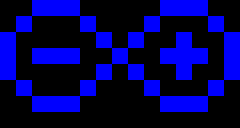
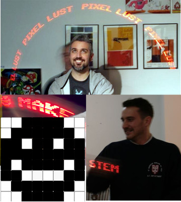

Example Sketches
You will be able to upload the programs described below to your Persistence of Vision circuit once you have completed these instructions to install the relevant software on your laptop. If they have been properly installed, our sketches should be accessible under File=>Sketchbook=>shrimpingit.
LED pattern - hard-coded
To start with, let's control the 8 LEDs to produce a static pattern by running the Pov01PatternFixed sketch.
The key part of the code is shown below, which controls eight digital output pins (which can be on or off) by 'writing' a value of true or false.
//turn on selected LEDs
digitalWrite(9, true );
digitalWrite(10, false);
digitalWrite(11, true );
digitalWrite(12, false);
digitalWrite(A1, true );
digitalWrite(A2, false);
digitalWrite(A3, true );
digitalWrite(A4, false);
LED pattern - stored in a variable
Next we will show how the 8 LEDs can produce the same pattern by reading bits from a byte in the Pov02PatternStored sketch.
The key parts of this code are show below. A byte stores a binary pattern, and each bit of the byte is examined in turn (using bitwise &) to see if each of the eight lights should be lit.
byte pattern = 0b10101010;
//check which 'bits' are set in the byte called 'pattern'
digitalWrite(9, (pattern & 0b00000001) != 0);
digitalWrite(10, (pattern & 0b00000010) != 0);
digitalWrite(11, (pattern & 0b00000100) != 0);
digitalWrite(12, (pattern & 0b00001000) != 0);
digitalWrite(A1, (pattern & 0b00010000) != 0);
digitalWrite(A2, (pattern & 0b00100000) != 0);
digitalWrite(A3, (pattern & 0b01000000) != 0);
digitalWrite(A4, (pattern & 0b10000000) != 0);
In each case, if the bit isn't set, then the result of the & operator is 0. The phrase != 0 means 'not equal to zero'.
LED pattern - using a 'while' loop
Instead of having separate lines of code for every LED, we use a while loop in Pov03PatternWhile.
The key parts of this code are shown below. Instead of explicitly writing eight lots of instructions to query each bit and control each light, we have a single set of instructions, which is executed eight times.
The code relies on an array containing the pin numbers. A bitCounter is used to count how many bits of the pattern have already been processed. The bitValue starts as 1, then becomes 2, then 4, then 8 and so on, corresponding with each digit of the binary number.
int pinNumbers[] = { 9,10,11,12,A1,A2,A3,A4 };
bitCounter = 0;
bitValue = 0b00000001;
while(bitCounter < totalBits){
digitalWrite(pinNumbers[bitCounter], (pattern & bitValue) != 0);
bitCounter = bitCounter + 1;
bitValue = bitValue * 2;
}
LED pattern - using a function call
Instead of having the sequence of steps to light the LEDs embedded in routine called 'loop', we put those steps in their own routine, called setLights(...) in Pov04PatternFunction
The key parts of this code are shown below. We've moved the steps which turn on and off the lights into their own routine called, setLights and the steps in loop (which are repeated forever on a loop) tell setLights to execute with a particular pattern.
void loop() {
setLights(pattern);
delay(1);
setLights(empty);
delay(2);
}
void setLights(byte pattern){
bitCounter = 0;
bitValue = 1;
while(bitCounter < totalBits){
digitalWrite(pinNumbers[bitCounter], (pattern & bitValue) != 0); //turn on the LED if the 'pattern' value has that bit set
bitCounter = bitCounter + 1;
bitValue = bitValue * 2;
}
}
LED POV - Painting a sequence of patterns
Previously we were visiting a sequence of bits, and setting the lights to a given pattern. Now we go 'up a level' by doing the same thing for a sequence of patterns. If we upload Pov05SequenceSmiley and attach a battery pack, then waving it in the air should paint a smiley face.
The key parts of this code are shown below. The byte array called patternSequence contains a series of vertical columns, which make up a smiley face.
byte patternSequence[] = {
0b00111100,
0b01001110,
0b11011011,
0b11011111,
0b11011111,
0b11011011,
0b01001110,
0b00111100
};
If you inspect the byte array carefully, you can see the image below, tipped to the right (each byte is a vertical column, starting from the left side)...

LED POV - Painting the Arduino logo
Just for fun, we do the same thing with a different pattern - the Arduino Logo with our sketch Pov06SequenceArduino. Of course this is best done with Blue LEDs!
byte patternSequence[] = {
0b00111000,
0b01000100,
0b10010010,
0b10010010,
0b10010010,
0b01000100,
0b00101000,
0b00010000,
0b00101000,
0b01000100,
0b10010010,
0b10111010,
0b10010010,
0b01000100,
0b00111000
};
{kind=link}

LED POV - Painting text in the air
Ourlast demonstration sketch is the best. We have exported the 8-bit font information from a Commodore 64 into an Arduino sketch, so that learners can paint their name or choice of message in the air. Simply change the 'message' value in Pov07PaintText to choose your own text!

Exploring our examples
All the code examples for the POV circuit can be browsed on the web at https://github.com/ShrimpingIt/projects/tree/master/sketchbook/shrimpingit/pov
Future developments
Why not add a tilt-switch to 'reverse the polarity' so the circuit can tell whether it is moving from left-to-right or from right-to-left?
Attach a soldered version of the circuit securely to a bicycle wheel or wind turbine